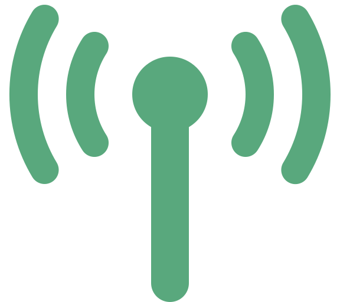

Portada
Arquitectura de Software
Semana 10 — Arquitecturas para Aplicaciones Modernas (JAMStack, WebAssembly, WebSockets)
Universidad de Antioquia · Ingeniería de Sistemas · 2554608 · 2026-2

Apertura
Un sitio sin servidor de aplicación.
Código nativo dentro del navegador.
Una conexión que nunca se cierra.

Transición
Tres formas de romper supuestos que ya dábamos por sentados
Desde el patrón Cliente/Servidor (Semana 7) hasta SOFEA (Semana 9), han visto arquitecturas donde un servidor recibe una petición HTTP, procesa algo y responde — el modelo de "pregunta y respuesta" que domina la web desde los años 90.
Hoy conocen tres tecnologías que, cada una a su manera, rompen un supuesto distinto de ese modelo: JAMStack elimina el servidor de aplicación para páginas que no lo necesitan; WebAssembly rompe la exclusividad de JavaScript como único código que corre en el navegador; y WebSockets rompe la idea de que cada mensaje necesita su propia petición HTTP.
Caso · Ficha técnica
Netlify acuña "JAMStack", 2015–2016
| Término | "JAMStack" (JavaScript + APIs + Markup) |
|---|---|
| Empresa | Netlify |
| Promotor | Mathias Biilmann, cofundador y CEO de Netlify |
| Año aproximado | 2015–2016 |
| Qué hicieron | Le pusieron nombre y promovieron activamente un patrón que ya venía emergiendo con los generadores de sitios estáticos, sin inventar la técnica desde cero |
Netlify es, hasta hoy, una de las plataformas de hosting más asociadas al despliegue de sitios JAMStack.
Caso · Por qué emergió
Rendimiento y seguridad, sin servidor de aplicación
Antes de JAMStack, generar una página normalmente significaba que un servidor de aplicación construía el HTML en cada petición (como en Cliente/Servidor N-capas). JAMStack invierte esa idea: el sitio se pre-construye como archivos estáticos (HTML, CSS, JS) y se sirve directamente desde una CDN —una red de servidores distribuidos geográficamente que entrega esos archivos desde el punto más cercano al usuario—, sin que ningún servidor tenga que generar nada en el momento.
- Rendimiento: no hay que esperar a que un servidor arme la página; el archivo ya existe y viaja desde el punto más cercano.
- Seguridad: menor superficie de ataque — no hay base de datos ni servidor de aplicación expuestos directamente al público.
- Escalabilidad: servir archivos estáticos desde una CDN soporta picos de tráfico mucho mayores que regenerar HTML por petición.
Concepto
JAMStack: JavaScript + APIs + Markup
| Letra | Significa | Rol en el sitio |
|---|---|---|
| J | JavaScript | Maneja toda la lógica dinámica en el navegador del cliente, sin depender de un servidor que la ejecute |
| A | APIs | La funcionalidad de backend (pagos, comentarios, búsqueda) se consume desde servicios externos, reutilizables y desacoplados |
| M | Markup | El HTML ya viene pre-construido antes de la petición, no generado en el momento por un servidor de aplicación |
Ejemplo cercano: el propio sitio donde viven estas diapositivas (profejuanfe.dev) es HTML/CSS/JS plano, sin build ni servidor de aplicación — cada página ya existe como archivo antes de que la pidan, y lo poco dinámico (compartir, navegación) corre en JavaScript del lado del cliente.
Concepto · Ventajas y limitaciones
JAMStack no es la respuesta para todo
| Ventajas | Limitaciones |
|---|---|
| Rendimiento alto: archivos servidos desde CDN, sin espera de generación | No sirve bien para contenido que cambia por cada usuario en tiempo real (ej. un feed personalizado que se recalcula constantemente) |
| Menor superficie de ataque al no exponer un servidor de aplicación tradicional | Cada cambio de contenido requiere reconstruir y redesplegar los archivos estáticos |
| Escala con facilidad ante picos de tráfico | La lógica de negocio compleja termina viviendo en APIs externas, lo que agrega piezas y proveedores que coordinar |
Encaja mejor en blogs, documentación, portafolios, landing pages y sitios de marketing que en aplicaciones altamente transaccionales.
Transición
De dónde vive el HTML a qué código corre en el navegador
JAMStack cambió dónde se genera el HTML, pero no cambió qué lenguaje ejecuta la lógica del navegador: seguía siendo JavaScript, como lo ha sido desde el nacimiento de la web.
La siguiente tecnología rompe justo ese supuesto: ¿qué pasa si el navegador pudiera ejecutar código compilado desde otros lenguajes, a velocidad cercana a la nativa?
Caso · Ficha técnica
Mozilla, Google, Microsoft y Apple, 2015
| Tecnología | WebAssembly (Wasm) |
|---|---|
| Año de anuncio | 2015 |
| Organizaciones | Mozilla, Google, Microsoft y Apple — anuncio conjunto |
| Por qué es notable | Los cuatro grandes fabricantes de navegadores, normalmente competidores entre sí, colaboraron para crear un estándar común en vez de que cada uno impulsara su propia alternativa |
Ese tipo de colaboración entre competidores directos es poco común en la industria — y es parte de por qué WebAssembly se adoptó tan rápido en los cuatro navegadores principales.
Caso · Estandarización
Recomendación oficial del W3C, 2019
El W3C (World Wide Web Consortium) es el organismo internacional que define los estándares abiertos de la web —el mismo tipo de organismo detrás de HTML y CSS—. Que WebAssembly se convirtiera en una de sus recomendaciones oficiales confirmó que dejó de ser un experimento de los fabricantes de navegadores para pasar a ser parte formal de la plataforma web.
- 2015: anuncio conjunto de Mozilla, Google, Microsoft y Apple.
- 2017–2018: soporte implementado en los cuatro navegadores principales.
- 2019: WebAssembly se convierte en recomendación oficial del W3C.
De anuncio conjunto entre competidores a estándar formal de la web en menos de cuatro años.
Concepto
Código compilado, a velocidad casi nativa, en el navegador
WebAssembly (Wasm) es un formato binario portable que permite ejecutar en el navegador código compilado desde lenguajes como C, C++ o Rust, a una velocidad cercana a la nativa —muy superior a la de JavaScript interpretado para cargas de cómputo intensivo—.
- No reemplaza a JavaScript: lo complementa. JavaScript sigue orquestando la página y sigue siendo el único que manipula el DOM (la estructura de la página que ve el usuario) directamente.
- Abre la puerta a llevar a la web aplicaciones antes impensables en un navegador: edición de video, herramientas de CAD, motores de videojuegos, simulación científica.
Concepto · Ventajas y limitaciones
Rendimiento a cambio de un toolchain más complejo
| Ventajas | Limitaciones |
|---|---|
| Rendimiento cercano al nativo para cómputo intensivo | No manipula el DOM directamente: para eso sigue haciendo falta JavaScript |
| Permite reutilizar código existente escrito en C, C++, Rust, entre otros, en vez de reescribirlo en JavaScript | Curva de aprendizaje y toolchain de compilación más compleja que escribir JavaScript directo |
| Portable: el mismo binario corre en cualquier navegador compatible | No conviene para lógica simple de interfaz, donde JavaScript sigue siendo más práctico |
WebAssembly se usa donde el rendimiento importa más que la simplicidad de desarrollo, no como reemplazo general de JavaScript.
Transición
De qué código corre a cómo se comunican cliente y servidor
JAMStack cambió dónde vive el HTML y WebAssembly cambió qué código puede correr en el navegador, pero ambos siguen usando el mismo mecanismo de comunicación de siempre: peticiones HTTP independientes, una por cada intercambio.
La última tecnología de hoy rompe justamente eso: una conexión que se abre una vez y se queda abierta, hablando en ambas direcciones.
Caso · Ficha técnica
IETF, RFC 6455, 2011
| Protocolo | WebSocket |
|---|---|
| Estandarizado por | IETF (Internet Engineering Task Force), el organismo que define los estándares técnicos de internet mediante documentos llamados RFC (Request for Comments) |
| Documento | RFC 6455 |
| Año | 2011 |
| Contexto | Parte del esfuerzo más amplio de HTML5 por permitir aplicaciones web más interactivas |
Casos típicos habilitados por WebSockets: chats en vivo, juegos multijugador, dashboards en tiempo real, notificaciones instantáneas.
Concepto
Una conexión persistente, en vez de una petición por mensaje
WebSockets establece una conexión bidireccional persistente entre cliente y servidor sobre una única conexión TCP (el protocolo de transporte confiable que ya vieron en Layers/Microkernel, Semana 7). Una vez abierta, esa conexión se mantiene activa y ambos lados pueden enviar mensajes en cualquier momento, sin volver a abrir la conexión cada vez.
- HTTP tradicional: cada mensaje requiere una petición nueva; el servidor solo responde, nunca inicia el contacto.
- WebSockets: una sola conexión se queda abierta; cliente y servidor se envían mensajes en ambas direcciones sin el overhead de abrir una petición nueva cada vez.

Tensión conceptual
WebSockets no es lo mismo que WebHooks
En la Semana 8 vieron WebHooks: el servidor le avisa al cliente una sola vez, con un POST, cuando ocurre un evento puntual —el cliente registra una URL y espera, sin conexión activa entre avisos—.
WebSockets es otra cosa: cliente y servidor quedan conectados de forma continua y se hablan en ambas direcciones todo el tiempo, no solo cuando hay un evento puntual que notificar.
| WebHooks | WebSockets | |
|---|---|---|
| Naturaleza de la conexión | Puntual: una petición POST por evento | Persistente: una sola conexión abierta y activa |
| Quién inicia | El servidor, solo cuando ocurre el evento | Ambos lados, en cualquier momento, una vez abierta la conexión |
| Caso típico | Stripe avisa un pago exitoso; GitHub avisa un push | Chat en vivo; dashboard que se actualiza solo |
Interacción
¿Cuál de las tres usarían en su proyecto de CodeF@ctory?
En equipos, respondan:
- ¿Alguna parte de su proyecto podría servirse como sitio estático puro (JAMStack), sin servidor de aplicación? ¿Cuál?
- ¿Hay alguna operación de su proyecto tan pesada en cómputo que WebAssembly tendría sentido? ¿O ninguna lo justifica?
- ¿Qué funcionalidad de su proyecto se beneficiaría de una conexión WebSocket en vez de peticiones HTTP repetidas?
5 minutos · respondan en voz alta o en el chat
Síntesis
Ideas clave de hoy
- JAMStack (JavaScript + APIs + Markup, Netlify/Mathias Biilmann, 2015–2016) pre-construye el sitio como archivos estáticos servidos desde CDN, en vez de generarlo en cada petición: mejor rendimiento, seguridad y escalabilidad, a costa de no encajar bien en contenido altamente transaccional.
- WebAssembly (anunciado por Mozilla, Google, Microsoft y Apple en 2015; recomendación W3C en 2019) permite ejecutar código compilado a velocidad casi nativa en el navegador, complementando —no reemplazando— a JavaScript, que sigue siendo el único que manipula el DOM.
- WebSockets (IETF, RFC 6455, 2011) abre una conexión TCP persistente y bidireccional entre cliente y servidor, evitando el overhead de una petición HTTP nueva por cada mensaje.
- WebSockets no es lo mismo que WebHooks: WebHooks avisa un evento puntual una sola vez; WebSockets mantiene una conversación continua en ambas direcciones.
- Las tres tecnologías rompen, cada una, un supuesto distinto del modelo tradicional de petición-respuesta que domina la web desde los 90.
Cierre
Para la próxima semana
- Repasar qué problema resuelve cada una de las tres tecnologías de hoy y en qué se diferencia WebSockets de WebHooks (Semana 8).
- Pensar si alguna parte de su proyecto de CodeF@ctory podría beneficiarse de JAMStack, WebAssembly o WebSockets.
La próxima sesión sigue con arquitecturas para aplicaciones modernas: gRPC, Microfrontends, WebRTC, Persistencia Políglota y DevOps.